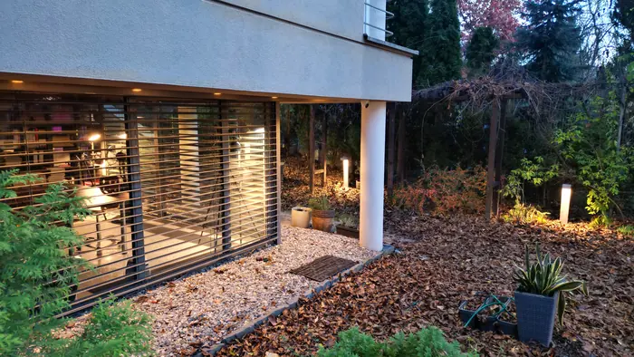

Realizacje,nie wizualizacje.
Pracownia architektoniczna z Lublina, od 1997 roku.
Drukarnia DAKO · Lubartów · ogród na dachu
+48 501 061 258
Projektujemy budynki, które potem stoją i pracują.
Zespół architektów z Lublina. Od 1997 roku projektujemy galerie handlowe, zakłady produkcyjne, biurowce i budynki mieszkalne. Przez wiele lat prowadziliśmy kolejne etapy dużych obiektów: Galerii Olimp, Drukarni DAKO i Galerii Venus. Pokazujemy tylko to, co zostało zbudowane.
Wybrane realizacje
Wszystkie realizacjeDrukarnia DAKO
Lubartów · 2004-2013Galeria Venus
Świdnik · 2005-2012Kościół pw. św. Michała Archanioła
LublinPryzmet
LublinWykaz projektów
2011-2013Galeria handlowo-usługowa Olimp Vz MultikinemLublinRealizacja
2009-2012Galeria handlowo-usługowa Venus 2ŚwidnikRealizacja
2008-2013Drukarnia DAKO NEXTetapy I i IIILubartówRealizacja
2007-2009Galeria handlowo-usługowa Olimp IVotwarcie w czerwcu 2009LublinRealizacja
2007-2009Obiekt handlowo-usługowy z piekarniąŚwidnikRealizacja
2005-2006Galeria handlowo-usługowa Venus 1otwarcie 18 marca 2006ŚwidnikRealizacja
2004-2006Rozbudowa i modernizacja Drukarni DAKOLubartówRealizacja
2004-2005Modernizacja budynków maszyn wyciągowych i nadszybiaLubelski Węgiel Bogdanka S.A.BogdankaRealizacja
2005Rozbudowa Galerii Olimp IIILublinRealizacja
2005Galeria handlowa Zana, zmiana koncepcjiLublinKoncepcja
2004-2005Galeria handlowo-usługowaPuławyKoncepcja
2004-2005Baza handlowa i centrum logistyczne PPOCH ChemiaWarszawaKoncepcja
2002Rozbudowa Galerii Olimp IILublinRealizacja
2001Budynek zakładów naukowych Akademii RolniczejLublinKoncepcja
2000-2001Galeria handlowa ZanaLublinKoncepcja
2000Ośrodek sportowyWarszawaKoncepcja
2000Zespół mieszkalno-usługowy z budynkiem biurowymWarszawaKoncepcja
2000Stacja ASOKalinówkaKoncepcja
2000Modernizacja budynku TP SALublinKoncepcja
2000Centrum szkoleniowe ochrony przed bronią biologicznąPuławyKoncepcja
1999-2000Galeria Olimp ILublinRealizacja
1998Zagospodarowanie hipermarketu RealLublinRealizacja
1995Budynek mieszkaniowy dla SM Instalatornominacja do nagrody PremieraLublinRealizacja
1995-1996Budynek mieszkalno-usługowy SM Instalatorprojekt wybrany w konkursie SARPLublinRealizacja

Zespół architektów i stali branżyści.
Pracownia powstała w 1997 roku, samodzielnie działa od listopada 1998. Przy każdym projekcie współpracujemy ze stałymi zespołami konstruktorów, instalatorów, elektryków i teletechników oraz z rzeczoznawcami.
Zapraszamy
do pracowni.
E-mailamr@rossa.pl
Adresul. Zbożowa 6, 20-827 Lublin
Wyznacz trasę
Wyznacz trasę
AMR Architekci & Partnerzyul. Zbożowa 6, Lublin